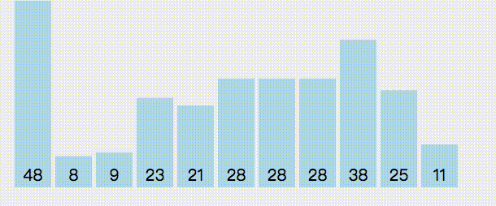
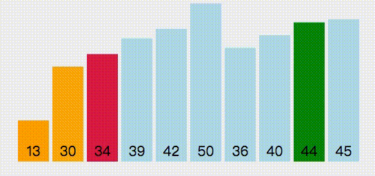
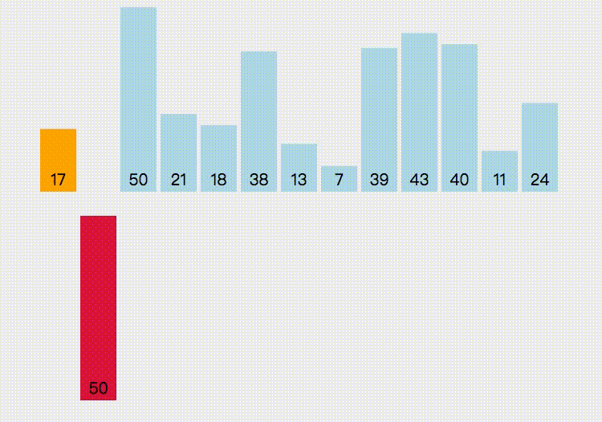
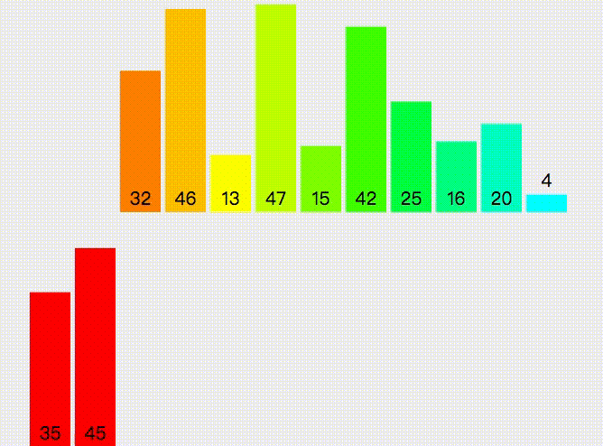
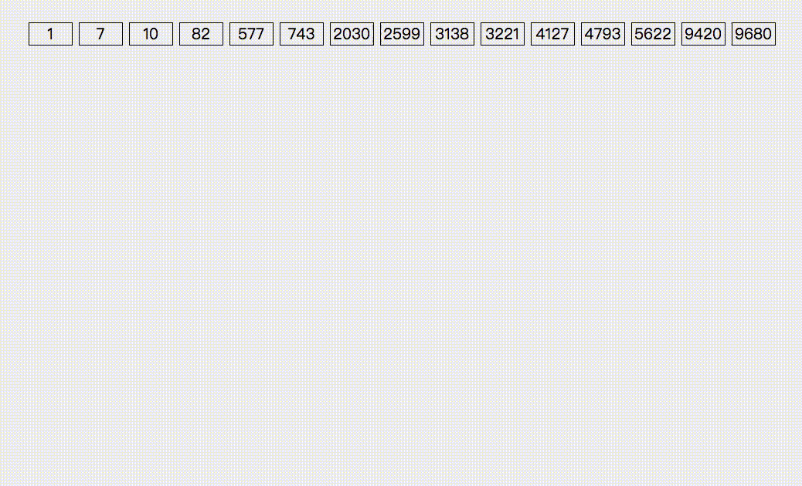

<!DOCTYPE html>
<html>
<head><meta name="generator" content="Hexo 3.8.0">
  <meta charset="utf-8">
  
  <title>排序算法总结 | LIUXUEWEN&#39;S BLOG</title>
  <meta name="viewport" content="width=device-width, initial-scale=1, maximum-scale=1">
  
    <meta name="keywords" content="LIUXUEWEN,LIUXUEWEN's Blog">
  
  <meta name="description" content="一、排序性能  对于排序算法来说，其性能主要包括两个方面：  时间复杂度：指执行算法所需要的计算工作量；用O表示；  空间复杂度：指执行这个算法所需要的内存空间；用O表示；   关于排序的稳定性：通俗地讲，若排序前两个相等的数在序列的前后位置顺序，和排序后它们两个的前后位置顺序相同，那么就是稳定的。简单形式化一下，如果Ai = Aj，Ai原来在位置前，排序后Ai还是要在Aj位置前。   什么时候需">
<meta name="keywords" content="数据结构">
<meta property="og:type" content="article">
<meta property="og:title" content="排序算法总结">
<meta property="og:url" content="http://liuxuewen-site.github.io/2018/03/14/DS-bs-sort/index.html">
<meta property="og:site_name" content="LIUXUEWEN&#39;S BLOG">
<meta property="og:description" content="一、排序性能  对于排序算法来说，其性能主要包括两个方面：  时间复杂度：指执行算法所需要的计算工作量；用O表示；  空间复杂度：指执行这个算法所需要的内存空间；用O表示；   关于排序的稳定性：通俗地讲，若排序前两个相等的数在序列的前后位置顺序，和排序后它们两个的前后位置顺序相同，那么就是稳定的。简单形式化一下，如果Ai = Aj，Ai原来在位置前，排序后Ai还是要在Aj位置前。   什么时候需">
<meta property="og:locale" content="default">
<meta property="og:image" content="http://liuxuewen-site.github.io/2018/03/14/DS-bs-sort/1.gif">
<meta property="og:image" content="http://liuxuewen-site.github.io/2018/03/14/DS-bs-sort/2.gif">
<meta property="og:image" content="http://liuxuewen-site.github.io/2018/03/14/DS-bs-sort/3.gif">
<meta property="og:image" content="http://liuxuewen-site.github.io/2018/03/14/DS-bs-sort/4.gif">
<meta property="og:image" content="http://liuxuewen-site.github.io/2018/03/14/DS-bs-sort/5.gif">
<meta property="og:image" content="http://liuxuewen-site.github.io/2018/03/14/DS-bs-sort/6.gif">
<meta property="og:updated_time" content="2019-01-25T09:59:56.379Z">
<meta name="twitter:card" content="summary">
<meta name="twitter:title" content="排序算法总结">
<meta name="twitter:description" content="一、排序性能  对于排序算法来说，其性能主要包括两个方面：  时间复杂度：指执行算法所需要的计算工作量；用O表示；  空间复杂度：指执行这个算法所需要的内存空间；用O表示；   关于排序的稳定性：通俗地讲，若排序前两个相等的数在序列的前后位置顺序，和排序后它们两个的前后位置顺序相同，那么就是稳定的。简单形式化一下，如果Ai = Aj，Ai原来在位置前，排序后Ai还是要在Aj位置前。   什么时候需">
<meta name="twitter:image" content="http://liuxuewen-site.github.io/2018/03/14/DS-bs-sort/1.gif">
  
  
    <link rel="icon" href="/favicon.ico">
  
  <link href="//cdn.bootcss.com/font-awesome/4.7.0/css/font-awesome.min.css" rel="stylesheet" type="text/css">
  <link rel="stylesheet" href="/css/style.css">
  <script src="/js/pace.min.js"></script>
  

  
  

</head>
</html>
<body>
  <div id="container">
      <header id="header">
    <div id="banner"></div>
    <div id="header-outer">
        <div id="header-menu" class="header-menu-pos animated">
            <div class="header-menu-container">
                <a href="/" class="left">
                    <span class="site-title">I AM LIUXUEWEN</span>
                </a>
                <nav id="header-menu-nav" class="right">
                    
                    <a href="/">
                        <i class="fa fa-home"></i>
                        <span>Home</span>
                    </a>
                    
                    <a href="/archives">
                        <i class="fa fa-archive"></i>
                        <span>Archives</span>
                    </a>
                    
                    <a href="/about">
                        <i class="fa fa-user"></i>
                        <span>About</span>
                    </a>
                    
                </nav>
                <a class="mobile-header-menu-button">
                    <i class="fa fa-bars"></i>
                </a>
            </div>
        </div>
        <div id="header-row">
            <div id="logo">
                <a href="/">
                    
                </a>
            </div>
            <div class="header-info">
                <div id="header-title">
                    
                    <h2>
                        I AM LIUXUEWEN
                    </h2>
                    
                </div>
                <div id="header-description">
                    
                    <h3>
                        一个 宅不住 的 IT程序员
                    </h3>
                    
                </div>
            </div>
            <nav class="header-nav">
                <div class="social">
                    
                        <a title="Github" target="_blank" href="//github.com/liuxuewen-site">
                            <i class="fa fa-github fa-2x"></i></a>
                    
                        <a title="Weibo" "="">
                            <i class="fa fa-weibo fa-2x"></i></a>
                    
                        <a title="Weixin" "="">
                            <i class="fa fa-weixin fa-2x"></i></a>
                    
                </div>
            </nav>
        </div>
    </div>
</header>
      <div class="outer">
        <section id="main" class="body-wrap"><article id="post-DS-bs-sort" class="article article-type-post" itemscope="" itemprop="blogPost">
  <div class="article-inner">
    
      <header class="article-header">
        
  
    <h1 class="post-title" itemprop="name">
      排序算法总结
    </h1>
    <div class="post-title-bar">
      <ul>
          
              <li>
                  <i class="fa fa-book"></i>
                  
                      <a href="/categories/数据结构/">数据结构</a>
                  
              </li>
          
        <li>
          <i class="fa fa-calendar"></i>  2018-03-14
        </li>
        <li>
          <i class="fa fa-eye"></i>
          <span id="busuanzi_value_page_pv"></span>
        </li>
      </ul>
    </div>
  

          
      </header>
    
    <div class="article-entry post-content" itemprop="articleBody">
      
            
            <h3 id="一、排序性能"><a href="#一、排序性能" class="headerlink" title="一、排序性能"></a>一、排序性能</h3><p>  对于排序算法来说，其性能主要包括两个方面：<br>  时间复杂度：指执行算法所需要的计算工作量；用O表示；<br>  空间复杂度：指执行这个算法所需要的内存空间；用O表示；</p>
<p>  关于排序的稳定性：通俗地讲，若排序前两个相等的数在序列的前后位置顺序，和排序后它们两个的前后位置顺序相同，那么就是稳定的。简单形式化一下，如果Ai = Aj，Ai原来在位置前，排序后Ai还是要在Aj位置前。</p>
<p>  什么时候需要稳定：比如说按班级录入各班成绩，1、2、3班都有一个同分数的同学A、B、C，按成绩排序后，顺序应该是A、B、C，但如果算法不稳定，A、B、C的顺序可能会改变，这样既看起来别扭，可能有同学也会有意见。</p>
<h3 id="二、Array-sort"><a href="#二、Array-sort" class="headerlink" title="二、Array.sort"></a>二、Array.sort</h3><p>  1）描述：sort()方法用于对数组的元素进行排序,并返回数组。</p>
<p>  2）语法：arrayObject.sort(sortby)。</p>
<p>  3）注意：<br>  默认排序顺序是根据字符串Unicode码点。参数sortby可选，规定排序顺序，必须是函数。即：<br>  a、如果调用该方法时没有使用参数，将按字母顺序对数组中的元素进行排序，即按照字符编码的顺序进行排序。<br>  b、如果想按其他标准进行排序，需提供比较函数，该函数比较两个值，然后返回一个用于说明这两个值的相对顺序的数字。比较函数应该具有两个参数 a 和 b，其返回值如下：<br>  若 a 小于 b，在排序后的数组中 a 应该出现在 b 之前，则返回一个小于 0 的值。<br>  若 a 等于 b，则返回 0。<br>  若 a 大于 b，则返回一个大于 0 的值。<br>  <figure class="highlight bash"><table><tr><td class="gutter"><pre><span class="line">1</span><br><span class="line">2</span><br><span class="line">3</span><br><span class="line">4</span><br><span class="line">5</span><br></pre></td><td class="code"><pre><span class="line">const arr = [1, 20, 10, 30, 22, 11, 55, 24, 31, 88, 12, 100, 50];</span><br><span class="line"></span><br><span class="line">console.log(arr.sort());                                //[ 1, 10, 100, 11, 12, 20, 22, 24, 30, 31, 50, 55, 88 ]</span><br><span class="line"></span><br><span class="line">console.log(arr.sort((item1, item2) =&gt; item1 - item2)); //[ 1, 10, 11, 12, 20, 22, 24, 30, 31, 50, 55, 88, 100 ]</span><br></pre></td></tr></table></figure></p>
<p>  4）性能：<br>  a、Array.sort是通过javascript来实现的，使用的算法主要是快速排序，从源码的角度来看在实现上明显比我们所使用的快速排序复杂多了，主要是做了性能上的优化。</p>
<h3 id="三、冒泡排序"><a href="#三、冒泡排序" class="headerlink" title="三、冒泡排序"></a>三、冒泡排序</h3><p>  1）思路：第一次循环，开始比较当前元素与下一个元素的大小，如果比下一个元素小或者相等，则不需要交换两个元素的值；若比下一个元素大的话，则交换两个元素的值。然后，遍历整个数组，第一次遍历完之后，相同操作遍历第二遍。</p>
<p>  2）图例：<br>  </p>
<p>  3）实现：<br>  <figure class="highlight bash"><table><tr><td class="gutter"><pre><span class="line">1</span><br><span class="line">2</span><br><span class="line">3</span><br><span class="line">4</span><br><span class="line">5</span><br><span class="line">6</span><br><span class="line">7</span><br><span class="line">8</span><br><span class="line">9</span><br><span class="line">10</span><br><span class="line">11</span><br><span class="line">12</span><br><span class="line">13</span><br><span class="line">14</span><br><span class="line">15</span><br><span class="line">16</span><br><span class="line">17</span><br><span class="line">18</span><br><span class="line">19</span><br><span class="line">20</span><br></pre></td><td class="code"><pre><span class="line">const arr = [1, 20, 10, 30, 22, 11, 55, 24, 31, 88, 12, 100, 50];</span><br><span class="line"></span><br><span class="line"><span class="keyword">function</span> swap(array, p, q)&#123;</span><br><span class="line">  <span class="built_in">let</span> temp = array[p];</span><br><span class="line">  arr[p] = arr[q];</span><br><span class="line">  arr[q] = temp;</span><br><span class="line">&#125;</span><br><span class="line"></span><br><span class="line"><span class="keyword">function</span> bubbleSort(arr)&#123;</span><br><span class="line">  <span class="keyword">for</span>(<span class="built_in">let</span> i = 0; i &lt; arr.length - 1; i++)&#123;</span><br><span class="line">    <span class="keyword">for</span>(<span class="built_in">let</span> j = 0; j &lt; arr.length - i - 1; j++)&#123;</span><br><span class="line">      <span class="keyword">if</span>(arr[j] &gt; arr[j + 1])&#123;</span><br><span class="line">        swap(arr, j, j+1);</span><br><span class="line">      &#125;</span><br><span class="line">    &#125;</span><br><span class="line">  &#125;</span><br><span class="line">  <span class="built_in">return</span> arr;</span><br><span class="line">&#125;</span><br><span class="line"></span><br><span class="line">console.log(bubbleSort(arr));  //[ 1, 10, 11, 12, 20, 22, 24, 30, 31, 50, 55, 88, 100 ]</span><br></pre></td></tr></table></figure></p>
<p>  4）性能：<br>    a、时间复杂度：平均时间复杂度是O(n^2)；最坏是O(n^2) – 把顺序的排列变成逆序，或把逆序的数列变成顺序；最好是O(N) – 数据本来就有序。<br>    b、空间复杂度：由于辅助空间为常数，所以空间复杂度是O(1);</p>
<p>  5）稳定性：稳定。因为排序时，如果两个元素相等，他俩前后位置顺序是不会交换的；除非你在排序时，交换两个元素的条件改成大于或等于。</p>
<p>  6）改进：可以对冒泡排序进行改进，使得它的时间复杂度在大多数顺序的情况下，减小到O(n);<br>  a、加一个标志位，如果没有进行交换，将标志位置为false，表示排序完成。<br>  <figure class="highlight bash"><table><tr><td class="gutter"><pre><span class="line">1</span><br><span class="line">2</span><br><span class="line">3</span><br><span class="line">4</span><br><span class="line">5</span><br><span class="line">6</span><br><span class="line">7</span><br><span class="line">8</span><br><span class="line">9</span><br><span class="line">10</span><br><span class="line">11</span><br><span class="line">12</span><br><span class="line">13</span><br><span class="line">14</span><br><span class="line">15</span><br><span class="line">16</span><br><span class="line">17</span><br><span class="line">18</span><br><span class="line">19</span><br><span class="line">20</span><br><span class="line">21</span><br><span class="line">22</span><br><span class="line">23</span><br></pre></td><td class="code"><pre><span class="line">const arr = [1, 20, 10, 30, 22, 11, 55, 24, 31, 88, 12, 100, 50];</span><br><span class="line"></span><br><span class="line"><span class="keyword">function</span> swap(array, p, q)&#123;</span><br><span class="line">  <span class="built_in">let</span> temp = array[p];</span><br><span class="line">  arr[p] = arr[q];</span><br><span class="line">  arr[q] = temp;</span><br><span class="line">&#125;</span><br><span class="line"></span><br><span class="line"><span class="keyword">for</span>(<span class="built_in">let</span> i = 0; i &lt; arr.length - 1; i++)&#123;</span><br><span class="line">  <span class="built_in">let</span> flag = <span class="literal">false</span>;</span><br><span class="line">  <span class="keyword">for</span>(<span class="built_in">let</span> j = 0; j &lt; arr.length - 1 - i; j++)&#123;</span><br><span class="line">    <span class="keyword">if</span>(arr[j] &gt; arr[j+1])&#123;</span><br><span class="line">      swap(arr, j, j+1);</span><br><span class="line">      flag = <span class="literal">true</span>;</span><br><span class="line">    &#125;</span><br><span class="line">  &#125;</span><br><span class="line"></span><br><span class="line">  <span class="keyword">if</span>(!flag)&#123;</span><br><span class="line">    <span class="built_in">break</span>;</span><br><span class="line">  &#125;</span><br><span class="line">&#125;</span><br><span class="line"></span><br><span class="line">console.log(arr);  //[ 1, 10, 11, 12, 20, 22, 24, 30, 31, 50, 55, 88, 100 ]</span><br></pre></td></tr></table></figure></p>
<p>  b、记录最后一次交换的位置， 因为最后一次交换的数，是在这一次排序当中最大的数，之后的数都比它小。在最佳状态时，时间复杂度也会缩小到O(n);<br>  <figure class="highlight bash"><table><tr><td class="gutter"><pre><span class="line">1</span><br><span class="line">2</span><br><span class="line">3</span><br><span class="line">4</span><br><span class="line">5</span><br><span class="line">6</span><br><span class="line">7</span><br><span class="line">8</span><br><span class="line">9</span><br><span class="line">10</span><br><span class="line">11</span><br><span class="line">12</span><br><span class="line">13</span><br><span class="line">14</span><br><span class="line">15</span><br><span class="line">16</span><br><span class="line">17</span><br><span class="line">18</span><br><span class="line">19</span><br><span class="line">20</span><br><span class="line">21</span><br><span class="line">22</span><br><span class="line">23</span><br></pre></td><td class="code"><pre><span class="line">const arr = [1, 20, 10, 30, 22, 11, 55, 24, 31, 88, 12, 100, 50 ,112];</span><br><span class="line"></span><br><span class="line"><span class="keyword">function</span> swap(array, p, q)&#123;</span><br><span class="line">  <span class="built_in">let</span> temp = array[p];</span><br><span class="line">  arr[p] = arr[q];</span><br><span class="line">  arr[q] = temp;</span><br><span class="line">&#125;</span><br><span class="line"></span><br><span class="line"><span class="keyword">function</span> improveBubble(arr, len)&#123;</span><br><span class="line">  <span class="keyword">for</span>(<span class="built_in">let</span> i = len - 1; i &gt;= 0; i--)&#123;</span><br><span class="line">    <span class="built_in">let</span> pos = 0;</span><br><span class="line">    <span class="keyword">for</span>(<span class="built_in">let</span> j = 0; j &lt; i; j++)&#123;</span><br><span class="line">      <span class="keyword">if</span>(arr[j] &gt; arr[j+1])&#123;</span><br><span class="line">        swap(arr, j, j+1);</span><br><span class="line">        pos = j + 1;</span><br><span class="line">      &#125;</span><br><span class="line">    &#125;</span><br><span class="line">    len = pos + 1;</span><br><span class="line">  &#125;</span><br><span class="line">  <span class="built_in">return</span> arr;</span><br><span class="line">&#125;</span><br><span class="line"></span><br><span class="line">console.log(improveBubble(arr, arr.length));  //[ 1, 10, 11, 12, 20, 22, 24, 30, 31, 50, 55, 88, 100, 112 ]</span><br></pre></td></tr></table></figure></p>
<h3 id="四、选择排序"><a href="#四、选择排序" class="headerlink" title="四、选择排序"></a>四、选择排序</h3><p>  1）思路：<br>  第一遍，从数组中选出最小的，与第一个元素进行交换；第二遍，从第二个元素开始，找出最小的，与第二个元素进行交换；依次循环，完成排序</p>
<p>  2）图例：<br>  </p>
<p>  3）实现：<br>  <figure class="highlight bash"><table><tr><td class="gutter"><pre><span class="line">1</span><br><span class="line">2</span><br><span class="line">3</span><br><span class="line">4</span><br><span class="line">5</span><br><span class="line">6</span><br><span class="line">7</span><br><span class="line">8</span><br><span class="line">9</span><br><span class="line">10</span><br><span class="line">11</span><br><span class="line">12</span><br><span class="line">13</span><br><span class="line">14</span><br><span class="line">15</span><br><span class="line">16</span><br><span class="line">17</span><br><span class="line">18</span><br><span class="line">19</span><br><span class="line">20</span><br><span class="line">21</span><br><span class="line">22</span><br></pre></td><td class="code"><pre><span class="line">const arr = [1, 20, 10, 30, 22, 11, 55, 24, 31, 88, 12, 100, 50];</span><br><span class="line"></span><br><span class="line"><span class="keyword">function</span> swap(arr, i, index)&#123;</span><br><span class="line">  var temp = arr[i];</span><br><span class="line">  arr[i] = arr[index];</span><br><span class="line">  arr[index] = temp;</span><br><span class="line">&#125;</span><br><span class="line"></span><br><span class="line"><span class="keyword">function</span> selectionSort(arr)&#123;</span><br><span class="line">  <span class="keyword">for</span>(<span class="built_in">let</span> i = 0; i &lt; arr.length - 1; i++)&#123;</span><br><span class="line">    <span class="built_in">let</span> index = i;</span><br><span class="line">    <span class="keyword">for</span>(<span class="built_in">let</span> j = i+1; j &lt; arr.length; j++)&#123;</span><br><span class="line">      <span class="keyword">if</span>(arr[index] &gt; arr[j])&#123;</span><br><span class="line">        index = j;</span><br><span class="line">      &#125;</span><br><span class="line">    &#125;</span><br><span class="line">    swap(arr, i, index);</span><br><span class="line">  &#125;</span><br><span class="line">  <span class="built_in">return</span> arr;</span><br><span class="line">&#125;</span><br><span class="line"></span><br><span class="line">console.log(selectionSort(arr)); //[ 1, 10, 11, 12, 20, 22, 24, 30, 31, 50, 55, 88, 100 ]</span><br></pre></td></tr></table></figure></p>
<p>  4）性能：<br>  时间复杂度：平均时间复杂度是O(n^2)。最好最坏也是（三项复杂度一样的即与初始排序无关）。<br>  空间复杂度：辅助空间是常数，空间复杂度为O(1);</p>
<p>  5）稳定性：不稳定。举个例子，序列5 8 5 2 9，第一遍选择是第1个元素5会和2交换，那么原序列中2个5的相对前后顺序就被破坏了，所以选择排序不是一个稳定的排序算法。</p>
<h3 id="五、插入排序"><a href="#五、插入排序" class="headerlink" title="五、插入排序"></a>五、插入排序</h3><p>  1）思路：<br>  首先，循环原数组，然后，将当前位置的元素，插入到之前已排序好的数组中，依次操作。</p>
<p>  2）图例：<br>  </p>
<p>  3）实现：<br>  <figure class="highlight bash"><table><tr><td class="gutter"><pre><span class="line">1</span><br><span class="line">2</span><br><span class="line">3</span><br><span class="line">4</span><br><span class="line">5</span><br><span class="line">6</span><br><span class="line">7</span><br><span class="line">8</span><br><span class="line">9</span><br><span class="line">10</span><br><span class="line">11</span><br><span class="line">12</span><br><span class="line">13</span><br><span class="line">14</span><br><span class="line">15</span><br><span class="line">16</span><br><span class="line">17</span><br><span class="line">18</span><br><span class="line">19</span><br><span class="line">20</span><br><span class="line">21</span><br><span class="line">22</span><br></pre></td><td class="code"><pre><span class="line">const arr = [1, 20, 10, 30, 22, 11, 55, 24, 0, 31, 88, 12, 100, 50 ,112];</span><br><span class="line"></span><br><span class="line"><span class="keyword">function</span> insertSort(arr)&#123;</span><br><span class="line">  <span class="keyword">for</span>(<span class="built_in">let</span> i = 0; i &lt; arr.length; i++)&#123;</span><br><span class="line">    <span class="built_in">let</span> temp = arr[i];</span><br><span class="line">    <span class="keyword">for</span>(<span class="built_in">let</span> j = 0; j &lt; i; j++)&#123;</span><br><span class="line">      <span class="keyword">if</span>(temp &lt; arr[j] &amp;&amp; j === 0)&#123;</span><br><span class="line">                             //splice() 方法向/从数组中添加/删除项目，然后返回被删除的项目。</span><br><span class="line">        arr.splice(i, 1);    //删除数组下标为i开始的1个元素</span><br><span class="line">        arr.unshift(temp);   //往数组第一项插入temp</span><br><span class="line">        <span class="built_in">break</span>;</span><br><span class="line">      &#125;<span class="keyword">else</span> <span class="keyword">if</span>(temp &gt; arr[j] &amp;&amp; temp &lt; arr[j+1] &amp;&amp; j &lt; i - 1)&#123;</span><br><span class="line">        arr.splice(i, 1);          //删除数组下标为i开始的1个元素</span><br><span class="line">        arr.splice(j+1, 0, temp);  //删除数组下标为j+1开始的0个元素，并往j+1后插入temp</span><br><span class="line">        <span class="built_in">break</span>;</span><br><span class="line">      &#125;</span><br><span class="line">    &#125;</span><br><span class="line">  &#125;</span><br><span class="line">  <span class="built_in">return</span> arr;</span><br><span class="line">&#125;</span><br><span class="line"></span><br><span class="line">console.log(insertSort(arr));  //[ 0, 1, 10, 11, 12, 20, 22, 24, 30, 31, 50, 55, 88, 100, 112 ]</span><br></pre></td></tr></table></figure></p>
<p>  4）性能：<br>  时间复杂度：平均时间复杂度是O(n^2)；最坏是O(n^2) – 把顺序的排列变成顺序，或把逆序的数列变成逆序；最好是O(N) – 把顺序的排列变成新逆序，或把逆序的数列变成顺序。<br>  空间复杂度：辅助空间为常数，空间复杂度是O(1)</p>
<p>  5）稳定性：稳定。如果碰见一个和插入元素相等的，那么会把插入元素放在相等元素的后面。所以相等元素的前后顺序没有改变，所以插入排序是稳定的。</p>
<p>  上面三个算法都是难兄难弟，因为算法的时间复杂度都是在O(n^2)，在最坏情况下，它们都需要对整个数组进行重新调整。</p>
<h3 id="六、快速排序"><a href="#六、快速排序" class="headerlink" title="六、快速排序"></a>六、快速排序</h3><p>  1）思路：<br>  首先，我们需要找到一个基数，然后将比基数小的值放在基数的左边，将比基数大的值放在基数的右边，之后进行递归那两组已经归类好的数组。</p>
<p>  2）图例：<br>  </p>
<p>  3）实现：<br>  <figure class="highlight bash"><table><tr><td class="gutter"><pre><span class="line">1</span><br><span class="line">2</span><br><span class="line">3</span><br><span class="line">4</span><br><span class="line">5</span><br><span class="line">6</span><br><span class="line">7</span><br><span class="line">8</span><br><span class="line">9</span><br><span class="line">10</span><br><span class="line">11</span><br><span class="line">12</span><br><span class="line">13</span><br><span class="line">14</span><br><span class="line">15</span><br><span class="line">16</span><br><span class="line">17</span><br><span class="line">18</span><br><span class="line">19</span><br><span class="line">20</span><br></pre></td><td class="code"><pre><span class="line">const arr = [30, 32, 6, 24, 37, 32, 45, 21, 38, 23, 47];</span><br><span class="line"></span><br><span class="line"><span class="keyword">function</span> quickSort(arr)&#123;</span><br><span class="line">  <span class="keyword">if</span>(arr.length &lt;= 1)&#123;</span><br><span class="line">    <span class="built_in">return</span> arr;</span><br><span class="line">  &#125;</span><br><span class="line">  <span class="built_in">let</span> temp = arr[0];</span><br><span class="line">  const left = [];</span><br><span class="line">  const right = [];</span><br><span class="line">  <span class="keyword">for</span>(var i = 1; i &lt; arr.length; i++)&#123;</span><br><span class="line">    <span class="keyword">if</span>(arr[i] &gt; temp)&#123;</span><br><span class="line">      right.push(arr[i]);</span><br><span class="line">    &#125;<span class="keyword">else</span>&#123;</span><br><span class="line">      left.push(arr[i]);</span><br><span class="line">    &#125;</span><br><span class="line">  &#125;</span><br><span class="line">  <span class="built_in">return</span> quickSort(left).concat([temp], quickSort(right));</span><br><span class="line">&#125;</span><br><span class="line"></span><br><span class="line">console.log(quickSort(arr));</span><br></pre></td></tr></table></figure></p>
<p>  4）性能：<br>  时间复杂度：平均时间复杂度O(nlogn)，最好是O(nlogn) – 每次都能均匀的划分序列，最差是O(n^2) – 划分之后一边是一个，一边是n-1个。<br>  空间复杂度：辅助空间是logn，所以空间复杂度为O(logn)</p>
<p>  5）稳定性：不稳定。比如序列为5 3 3 4 3 8 9 10 11，现在中枢元素5和3（第5个元素，下标从1开始计）交换就会把元素3的稳定性打乱，所以快速排序是一个不稳定的排序算法，不稳定发生在中枢元素和a[j] 交换的时刻。</p>
<h3 id="七、归并排序"><a href="#七、归并排序" class="headerlink" title="七、归并排序"></a>七、归并排序</h3><p>  1）思路：<br>  首先，将相邻的两个数进行排序，形成n/2对，然后在每两对进行合并，不断重复，直至排序完。</p>
<p>  2）图例：<br>  </p>
<p>  3）实现：<br>  <figure class="highlight bash"><table><tr><td class="gutter"><pre><span class="line">1</span><br><span class="line">2</span><br><span class="line">3</span><br><span class="line">4</span><br><span class="line">5</span><br><span class="line">6</span><br><span class="line">7</span><br><span class="line">8</span><br><span class="line">9</span><br><span class="line">10</span><br><span class="line">11</span><br><span class="line">12</span><br><span class="line">13</span><br><span class="line">14</span><br><span class="line">15</span><br><span class="line">16</span><br><span class="line">17</span><br><span class="line">18</span><br><span class="line">19</span><br><span class="line">20</span><br><span class="line">21</span><br><span class="line">22</span><br><span class="line">23</span><br><span class="line">24</span><br><span class="line">25</span><br><span class="line">26</span><br><span class="line">27</span><br><span class="line">28</span><br><span class="line">29</span><br></pre></td><td class="code"><pre><span class="line">//迭代版本</span><br><span class="line">const arr = [3,44,38,5,47,15,36,26,27,2,46,4,19,50,48]</span><br><span class="line"></span><br><span class="line"><span class="keyword">function</span> mergeSort(arr)&#123;</span><br><span class="line">  const len = arr.length;</span><br><span class="line">  </span><br><span class="line">  <span class="keyword">for</span>(<span class="built_in">let</span> seg = 1; seg &lt; len; seg += seg)&#123;</span><br><span class="line">    <span class="built_in">let</span> arrB = [];</span><br><span class="line">    <span class="keyword">for</span>(<span class="built_in">let</span> start = 0; start &lt; len; start += 2*seg)&#123;</span><br><span class="line">      <span class="built_in">let</span> row = start, mid = Math.min(start+seg, len), heig = Math.min(start + 2*seg, len);</span><br><span class="line">      <span class="built_in">let</span> start1 = start, end1 = mid;</span><br><span class="line">      <span class="built_in">let</span> start2 = mid, end2 = heig;</span><br><span class="line">      <span class="keyword">while</span>(start1 &lt; end1 &amp;&amp; start2 &lt; end2)&#123;</span><br><span class="line">        arr[start1] &lt; arr[start2] ? arrB.push(arr[start1++]) : arrB.push(arr[start2++]);</span><br><span class="line">      &#125;</span><br><span class="line">      <span class="keyword">while</span>(start1 &lt; end1)&#123;</span><br><span class="line">        arrB.push(arr[start1++]);</span><br><span class="line">      &#125;</span><br><span class="line">      <span class="keyword">while</span>(start2 &lt; end2)&#123;</span><br><span class="line">        arrB.push(arr[start2++]);</span><br><span class="line">      &#125;</span><br><span class="line">    &#125;</span><br><span class="line">    arr = arrB;</span><br><span class="line">  &#125;</span><br><span class="line"></span><br><span class="line">  <span class="built_in">return</span> arr;</span><br><span class="line">&#125;</span><br><span class="line"></span><br><span class="line">console.log(mergeSort(arr));</span><br></pre></td></tr></table></figure></p>
  <figure class="highlight bash"><table><tr><td class="gutter"><pre><span class="line">1</span><br><span class="line">2</span><br><span class="line">3</span><br><span class="line">4</span><br><span class="line">5</span><br><span class="line">6</span><br><span class="line">7</span><br><span class="line">8</span><br><span class="line">9</span><br><span class="line">10</span><br><span class="line">11</span><br><span class="line">12</span><br><span class="line">13</span><br><span class="line">14</span><br><span class="line">15</span><br><span class="line">16</span><br><span class="line">17</span><br><span class="line">18</span><br><span class="line">19</span><br><span class="line">20</span><br><span class="line">21</span><br><span class="line">22</span><br><span class="line">23</span><br><span class="line">24</span><br><span class="line">25</span><br><span class="line">26</span><br><span class="line">27</span><br></pre></td><td class="code"><pre><span class="line">//递归版</span><br><span class="line">const arr = [3,44,38,5,47,15,36,26,27,2,46,4,19,50,48];</span><br><span class="line"></span><br><span class="line"><span class="keyword">function</span> mergeSort(arr, seg = 1)&#123;</span><br><span class="line">  const len = arr.length;</span><br><span class="line">  <span class="keyword">if</span>(seg &gt; len)&#123;</span><br><span class="line">    <span class="built_in">return</span> arr;</span><br><span class="line">  &#125;</span><br><span class="line">  const arrB = [];</span><br><span class="line">  <span class="keyword">for</span>(var start = 0; start &lt; len; start += 2*seg)&#123;</span><br><span class="line">    <span class="built_in">let</span> low = start, mid = Math.min(start+seg, len), heig = Math.min(start+2*seg, len);</span><br><span class="line">    <span class="built_in">let</span> start1 = low, end1 = mid;</span><br><span class="line">    <span class="built_in">let</span> start2 = mid, end2 = heig;</span><br><span class="line">    <span class="keyword">while</span>(start1 &lt; end1 &amp;&amp; start2 &lt; end2)&#123;</span><br><span class="line">      arr[start1] &lt; arr[start2] ? arrB.push(arr[start1++]) : arrB.push(arr[start2++]);</span><br><span class="line">    &#125;</span><br><span class="line">    <span class="keyword">while</span>(start1 &lt; end1)&#123;</span><br><span class="line">      arrB.push(arr[start1++]);</span><br><span class="line">    &#125;</span><br><span class="line">    <span class="keyword">while</span>(start2 &lt; end2)&#123;</span><br><span class="line">      arrB.push(arr[start2++]);</span><br><span class="line">    &#125;</span><br><span class="line">  &#125;</span><br><span class="line">  <span class="built_in">return</span> mergeSort(arrB, seg * 2);</span><br><span class="line">&#125;</span><br><span class="line"></span><br><span class="line">console.log(mergeSort(arr));</span><br></pre></td></tr></table></figure>
<p>  4）性能：<br>  时间复杂度：平均时间复杂度是O(nlogn)。最好最坏也是（三项复杂度一样的即与初始排序无关）。<br>  空间复杂度：辅助空间为n，空间复杂度为O(n)</p>
<p>  5）稳定性：稳定。合并过程中，如果两个当前元素相等时，我们把处在前面序列的元素保存在结果序列的前面。所以，归并排序也是稳定的排序算法。</p>
<h3 id="八、基数排序"><a href="#八、基数排序" class="headerlink" title="八、基数排序"></a>八、基数排序</h3><p>  1）思路：<br>  首先，比较个位的数字大小，将数组的顺序变成按个位依次递增的，之后再比较十位，再比较百位的，直至最后一位。</p>
<p>  2）图例：<br>  </p>
<p>  3）实现：<br>  <figure class="highlight bash"><table><tr><td class="gutter"><pre><span class="line">1</span><br><span class="line">2</span><br><span class="line">3</span><br><span class="line">4</span><br><span class="line">5</span><br><span class="line">6</span><br><span class="line">7</span><br><span class="line">8</span><br><span class="line">9</span><br><span class="line">10</span><br><span class="line">11</span><br><span class="line">12</span><br><span class="line">13</span><br><span class="line">14</span><br><span class="line">15</span><br><span class="line">16</span><br><span class="line">17</span><br><span class="line">18</span><br><span class="line">19</span><br><span class="line">20</span><br><span class="line">21</span><br><span class="line">22</span><br><span class="line">23</span><br><span class="line">24</span><br><span class="line">25</span><br><span class="line">26</span><br><span class="line">27</span><br><span class="line">28</span><br><span class="line">29</span><br><span class="line">30</span><br><span class="line">31</span><br><span class="line">32</span><br><span class="line">33</span><br><span class="line">34</span><br><span class="line">35</span><br><span class="line">36</span><br><span class="line">37</span><br></pre></td><td class="code"><pre><span class="line">const arr = [3221, 1, 10, 9680, 577, 9420, 7, 5622, 4793, 2030, 3138, 82, 2599, 743, 4127, 10000];</span><br><span class="line"></span><br><span class="line"><span class="keyword">function</span> radixSort(arr)&#123;</span><br><span class="line">  <span class="built_in">let</span> maxNum = Math.max(...arr);</span><br><span class="line">  <span class="built_in">let</span> dis = 0;</span><br><span class="line">  const len = arr.length;</span><br><span class="line">  const count = new Array(10);</span><br><span class="line">  const tmp = new Array(len);</span><br><span class="line">  <span class="keyword">while</span>(maxNum &gt;=1)&#123;</span><br><span class="line">    maxNum /= 10;</span><br><span class="line">    dis++;</span><br><span class="line">  &#125;</span><br><span class="line">  <span class="keyword">for</span>(<span class="built_in">let</span> i = 1, radix = 1; i &lt;= dis; i++)&#123;</span><br><span class="line">    <span class="keyword">for</span>(<span class="built_in">let</span> j = 0; j &lt; 10; j++)&#123;</span><br><span class="line">      count[j] = 0;</span><br><span class="line">    &#125;</span><br><span class="line">    <span class="keyword">for</span>(<span class="built_in">let</span> j = 0; j &lt; len; j++)&#123;</span><br><span class="line">      <span class="built_in">let</span> k = parseInt(arr[j] / radix) % 10;</span><br><span class="line">      count[k]++;</span><br><span class="line">    &#125;</span><br><span class="line">    <span class="keyword">for</span>(<span class="built_in">let</span> j = 1; j &lt; 10; j++)&#123;</span><br><span class="line">      count[j] += count[j - 1];</span><br><span class="line">    &#125;</span><br><span class="line">    <span class="keyword">for</span>(<span class="built_in">let</span> j = len - 1; j &gt;= 0 ; j--)&#123;</span><br><span class="line">      <span class="built_in">let</span> k = parseInt(arr[j] / radix) % 10;</span><br><span class="line">      tmp[count[k] - 1] = arr[j];</span><br><span class="line">      count[k]--;</span><br><span class="line">    &#125;</span><br><span class="line">    <span class="keyword">for</span>(<span class="built_in">let</span> j = 0; j &lt; len; j++)&#123;</span><br><span class="line">      arr[j] = tmp[j]; </span><br><span class="line">    &#125;</span><br><span class="line">    radix *= 10;</span><br><span class="line">  &#125;</span><br><span class="line">  <span class="built_in">return</span> arr;</span><br><span class="line">&#125;</span><br><span class="line"></span><br><span class="line">console.log(radixSort(arr));</span><br></pre></td></tr></table></figure></p>
<p>  4）性能：<br>  时间复杂度：平均时间复杂度O(k*n)，k为最大位数的位数。最好最坏也是（三项复杂度一样的即与初始排序无关）。<br>  空间复杂度：O(n)</p>
<p>  5）稳定性：稳定。在基数排序过程中，每次都是将当前位数上相同数值的元素统一装桶，并不需要交换位置，所以基数排序是稳定的算法。</p>
<h3 id="九、希尔排序"><a href="#九、希尔排序" class="headerlink" title="九、希尔排序"></a>九、希尔排序</h3><h3 id="十、堆排序"><a href="#十、堆排序" class="headerlink" title="十、堆排序"></a>十、堆排序</h3><p>标注：</p>
<ul>
<li>参考资料1：<a href="https://github.com/laizimo/zimo-article/issues/9" target="_blank" rel="noopener">https://github.com/laizimo/zimo-article/issues/9</a></li>
</ul>

            <div class="post-copyright">
    <div class="content">
        <p>最后更新： 2019年01月25日 17:59</p>
        <p>原始链接： <a class="post-url" href="/2018/03/14/DS-bs-sort/" title="排序算法总结">http://liuxuewen-site.github.io/2018/03/14/DS-bs-sort/</a></p>
        <footer>
            <a href="http://liuxuewen-site.github.io">
                
                liuxuewen
            </a>
        </footer>
    </div>
</div>

      
        
            
<div class="page-reward">
    <a id="rewardBtn" href="javascript:;">赏</a>
</div>

<div id="reward" class="post-modal reward-lay">
    <a class="close" href="javascript:;" id="reward-close">×</a>
    <span class="reward-title">
        <i class="icon icon-quote-left"></i>
        请我吃糖~
        <i class="icon icon-quote-right"></i>
    </span>
    <div class="reward-content">
        
        <div class="reward-code">
            
        </div>
        <div class="reward-select">
            
            <label class="reward-select-item checked" data-id="wechat" data-wechat="/images/wechat_code.jpg">
                
            </label>
            
            
            <label class="reward-select-item" data-id="alipay" data-alipay="/images/alipay_code.jpg">
                
            </label>
            
        </div>
    </div>
</div>


        
    </div>
    <footer class="article-footer">
        
        
<div class="post-share">
    <a href="javascript:;" id="share-sub" class="post-share-fab">
        <i class="fa fa-share-alt"></i>
    </a>
    <div class="post-share-list" id="share-list">
        <ul class="share-icons">
          <li>
            <a class="weibo share-sns" target="_blank" href="http://service.weibo.com/share/share.php?url=http://liuxuewen-site.github.io/2018/03/14/DS-bs-sort/&title=《排序算法总结》 — LIUXUEWEN'S BLOG&pic=http://liuxuewen-site.github.ioimages/logo.png" data-title="微博">
              <i class="fa fa-weibo"></i>
            </a>
          </li>
          <li>
            <a class="weixin share-sns" id="wxFab" href="javascript:;" data-title="微信">
              <i class="fa fa-weixin"></i>
            </a>
          </li>
          <li>
            <a class="qq share-sns" target="_blank" href="http://connect.qq.com/widget/shareqq/index.html?url=http://liuxuewen-site.github.io/2018/03/14/DS-bs-sort/&title=《排序算法总结》 — LIUXUEWEN'S BLOG&source=" data-title="QQ">
              <i class="fa fa-qq"></i>
            </a>
          </li>
          <li>
            <a class="facebook share-sns" target="_blank" href="https://www.facebook.com/sharer/sharer.php?u=http://liuxuewen-site.github.io/2018/03/14/DS-bs-sort/" data-title="Facebook">
              <i class="fa fa-facebook"></i>
            </a>
          </li>
          <li>
            <a class="twitter share-sns" target="_blank" href="https://twitter.com/intent/tweet?text=《排序算法总结》 — LIUXUEWEN'S BLOG&url=http://liuxuewen-site.github.io/2018/03/14/DS-bs-sort/&via=http://liuxuewen-site.github.io" data-title="Twitter">
              <i class="fa fa-twitter"></i>
            </a>
          </li>
          <li>
            <a class="google share-sns" target="_blank" href="https://plus.google.com/share?url=http://liuxuewen-site.github.io/2018/03/14/DS-bs-sort/" data-title="Google+">
              <i class="fa fa-google-plus"></i>
            </a>
          </li>
        </ul>
     </div>
</div>
<div class="post-modal wx-share" id="wxShare">
    <a class="close" href="javascript:;" id="wxShare-close">×</a>
    <p>扫一扫，分享到微信</p>
    
</div>

<div class="mask"></div>

        
        <ul class="article-footer-menu">
            
            
  <li class="article-footer-tags">
    <i class="fa fa-tags"></i>
      
    <a href="/tags/数据结构/" class="color5">数据结构</a>
      
  </li>

        </ul>
        
    </footer>
  </div>
</article>


    <aside class="post-toc-pos post-toc-top" id="post-toc">
        <nav class="post-toc-wrap">
            <ol class="post-toc"><li class="post-toc-item post-toc-level-3"><a class="post-toc-link" href="#一、排序性能"><span class="post-toc-text">一、排序性能</span></a></li><li class="post-toc-item post-toc-level-3"><a class="post-toc-link" href="#二、Array-sort"><span class="post-toc-text">二、Array.sort</span></a></li><li class="post-toc-item post-toc-level-3"><a class="post-toc-link" href="#三、冒泡排序"><span class="post-toc-text">三、冒泡排序</span></a></li><li class="post-toc-item post-toc-level-3"><a class="post-toc-link" href="#四、选择排序"><span class="post-toc-text">四、选择排序</span></a></li><li class="post-toc-item post-toc-level-3"><a class="post-toc-link" href="#五、插入排序"><span class="post-toc-text">五、插入排序</span></a></li><li class="post-toc-item post-toc-level-3"><a class="post-toc-link" href="#六、快速排序"><span class="post-toc-text">六、快速排序</span></a></li><li class="post-toc-item post-toc-level-3"><a class="post-toc-link" href="#七、归并排序"><span class="post-toc-text">七、归并排序</span></a></li><li class="post-toc-item post-toc-level-3"><a class="post-toc-link" href="#八、基数排序"><span class="post-toc-text">八、基数排序</span></a></li><li class="post-toc-item post-toc-level-3"><a class="post-toc-link" href="#九、希尔排序"><span class="post-toc-text">九、希尔排序</span></a></li><li class="post-toc-item post-toc-level-3"><a class="post-toc-link" href="#十、堆排序"><span class="post-toc-text">十、堆排序</span></a></li></ol>
        </nav>
    </aside>
    

<nav id="article-nav">
  
    <a href="/2018/03/15/JS-bs-module/" id="article-nav-newer" class="article-nav-link-wrap">

      <span class="article-nav-title">
        <i class="fa fa-hand-o-left" aria-hidden="true"></i>
        
          前端模块化开发
        
      </span>
    </a>
  
  
    <a href="/2018/03/14/JS-bs-pseudoArray/" id="article-nav-older" class="article-nav-link-wrap">
      <span class="article-nav-title">伪数组</span>
      <i class="fa fa-hand-o-right" aria-hidden="true"></i>
    </a>
  
</nav>


    
</section>
        
      </div>
      <footer id="footer">
  <div class="outer">
    <div id="footer-info" class="inner">
      
<p>
    <span id="busuanzi_container_site_uv" style="display:none">
        总访客数：<span id="busuanzi_value_site_uv"></span>
    </span>
    <span id="busuanzi_container_site_pv" style="display:none">
        总访问量：<span id="busuanzi_value_site_pv"></span>
    </span>
</p>


      <!-- <p>
        Powered by  <a href="http://hexo.io/" target="_blank">Hexo</a>
        Theme <a href="//github.com/wongminho/hexo-theme-miho" target="_blank">MiHo</a>
      &copy; 2019 liuxuewen<br>
      </p> -->
      <p>
        1320325272@qq.com 
        liuxuewen
      </p>
    </div>
  </div>
</footer>
    <script async src="//busuanzi.ibruce.info/busuanzi/2.3/busuanzi.pure.mini.js"></script>
<script src="//cdn.bootcss.com/jquery/3.2.1/jquery.min.js"></script>
<script>
  var mihoConfig = {
      root: "http://liuxuewen-site.github.io",
      animate: true,
      isHome: false,
      share: true,
      reward: 1
  }
</script>
<div class="sidebar">
    <div id="sidebar-search" title="Search">
        <i class="fa fa-search"></i>
    </div>
    <div id="sidebar-category" title="Categories">
        <i class="fa fa-book"></i>
    </div>
    <div id="sidebar-tag" title="Tags">
        <i class="fa fa-tags"></i>
    </div>
    <div id="sidebar-top">
        <span class="sidebar-top-icon"><i class="fa fa-angle-up"></i></span>
    </div>
</div>
<div class="sidebar-menu-box" id="sidebar-menu-box">
    <div class="sidebar-menu-box-container">
        <div id="sidebar-menu-box-categories">
            <a class="category-link" href="/categories/hexo/">hexo</a><a class="category-link" href="/categories/前端/">前端</a><a class="category-link" href="/categories/后台/">后台</a><a class="category-link" href="/categories/数据结构/">数据结构</a><a class="category-link" href="/categories/网络协议/">网络协议</a><a class="category-link" href="/categories/项目/">项目</a>
        </div>
        <div id="sidebar-menu-box-tags">
            <a href="/tags/hexo/" style="font-size: 12.86px;">hexo</a> <a href="/tags/前端-CSS/" style="font-size: 14.29px;">前端-CSS</a> <a href="/tags/前端-ES6/" style="font-size: 11.43px;">前端-ES6</a> <a href="/tags/前端-HTML5/" style="font-size: 10px;">前端-HTML5</a> <a href="/tags/前端-JS/" style="font-size: 18.57px;">前端-JS</a> <a href="/tags/前端-react/" style="font-size: 20px;">前端-react</a> <a href="/tags/前端-安全性/" style="font-size: 10px;">前端-安全性</a> <a href="/tags/前端-性能优化/" style="font-size: 10px;">前端-性能优化</a> <a href="/tags/前端-服务器/" style="font-size: 11.43px;">前端-服务器</a> <a href="/tags/前端-移动端适配/" style="font-size: 11.43px;">前端-移动端适配</a> <a href="/tags/前端-考题/" style="font-size: 17.14px;">前端-考题</a> <a href="/tags/后台/" style="font-size: 10px;">后台</a> <a href="/tags/数据结构/" style="font-size: 10px;">数据结构</a> <a href="/tags/网络协议/" style="font-size: 15.71px;">网络协议</a> <a href="/tags/项目/" style="font-size: 10px;">项目</a>
        </div>
    </div>
    <a href="javascript:;" class="sidebar-menu-box-close">&times;</a>
</div>
<div class="mobile-header-menu-nav" id="mobile-header-menu-nav">
    <div class="mobile-header-menu-container">
        <span class="title">Menus</span>
        <ul class="mobile-header-menu-navbar">
            
            <li>
                <a href="/">
                    <i class="fa fa-home"></i><span>Home</span>
                </a>
            </li>
            
            <li>
                <a href="/archives">
                    <i class="fa fa-archive"></i><span>Archives</span>
                </a>
            </li>
            
            <li>
                <a href="/about">
                    <i class="fa fa-user"></i><span>About</span>
                </a>
            </li>
            
        </ul>
    </div>
    <div class="mobile-header-tag-container">
        <span class="title">Tags</span>
        <div id="mobile-header-container-tags">
            <a href="/tags/hexo/" style="font-size: 12.86px;">hexo</a> <a href="/tags/前端-CSS/" style="font-size: 14.29px;">前端-CSS</a> <a href="/tags/前端-ES6/" style="font-size: 11.43px;">前端-ES6</a> <a href="/tags/前端-HTML5/" style="font-size: 10px;">前端-HTML5</a> <a href="/tags/前端-JS/" style="font-size: 18.57px;">前端-JS</a> <a href="/tags/前端-react/" style="font-size: 20px;">前端-react</a> <a href="/tags/前端-安全性/" style="font-size: 10px;">前端-安全性</a> <a href="/tags/前端-性能优化/" style="font-size: 10px;">前端-性能优化</a> <a href="/tags/前端-服务器/" style="font-size: 11.43px;">前端-服务器</a> <a href="/tags/前端-移动端适配/" style="font-size: 11.43px;">前端-移动端适配</a> <a href="/tags/前端-考题/" style="font-size: 17.14px;">前端-考题</a> <a href="/tags/后台/" style="font-size: 10px;">后台</a> <a href="/tags/数据结构/" style="font-size: 10px;">数据结构</a> <a href="/tags/网络协议/" style="font-size: 15.71px;">网络协议</a> <a href="/tags/项目/" style="font-size: 10px;">项目</a>
        </div>
    </div>
</div>
<div class="search-wrap">
    <span class="search-close">&times;</span>
        <a href="javascript:;" class="header-icon waves-effect waves-circle waves-light" id="back">
            <i class="icon icon-lg icon-chevron-left"></i>
        </a>
        <input class="search-field" placeholder="Search..." id="keywords">
        <a id="search-submit" href="javascript:;">
            <i class="fa fa-search"></i>
        </a>
    <div class="search-container" id="search-container">
        <ul class="search-result" id="search-result">
        </ul>
    </div>
</div>

<div id="search-tpl">
    <li class="search-result-item">
        <a href="{url}" class="search-item-li">
            <span class="search-item-li-title" title="{title}">{title}</span>
        </a>
    </li>
</div>
<script src="/js/search.js"></script>
<script src="/js/main.js"></script>


  <script src="//cdn.bootcss.com/particles.js/2.0.0/particles.min.js"></script>
  <div id="particles"></div>
  <script src="/js/particles.js"></script>


  <link rel="stylesheet" href="//cdn.bootcss.com/animate.css/3.5.0/animate.min.css">
  <script src="//cdn.bootcss.com/scrollReveal.js/3.0.5/scrollreveal.js"></script>
  <script src="/js/animate.js"></script>


  <script src="/js/pop-img.js"></script>
  <script>
     $(".article-entry p img").popImg();
  </script>

  </div>
</body>
</html>